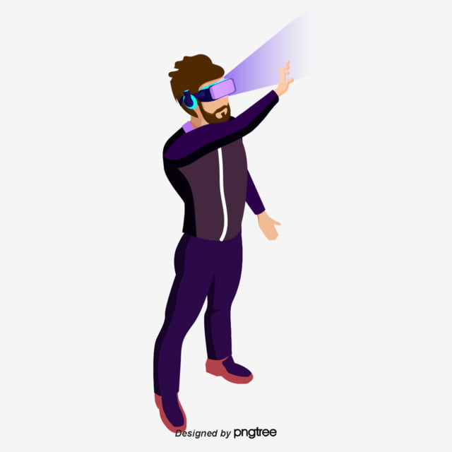
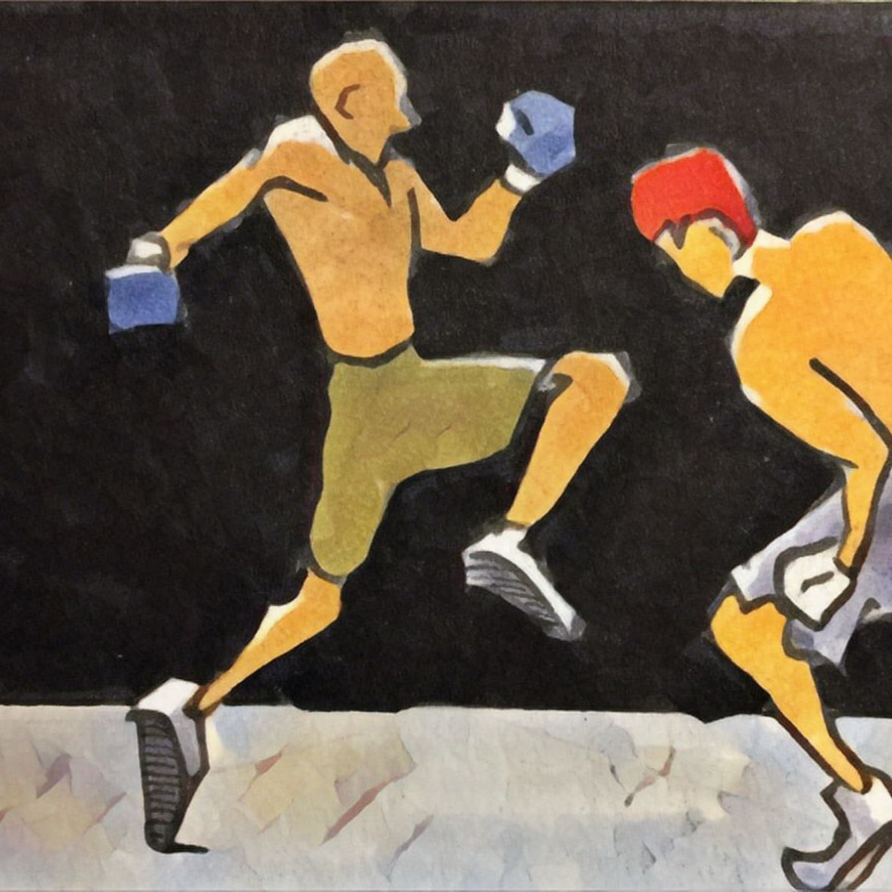
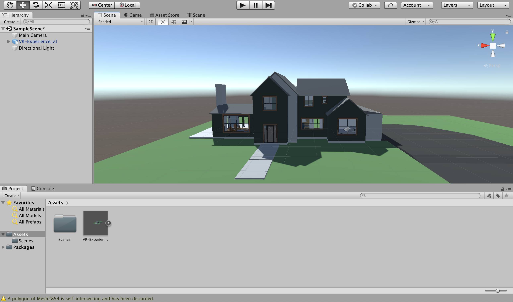

The contents of this page contain a very elaborate answer to the question “Can you tell me about yourself?”. I was born in the city of Hyderabad located in the southern part of India. I have pursued my education until high school in Hyderabad. I moved to Blacksburg, Virginia in 2018 to pursue a Bachelor’s of Science Degree from the college of Engineering at Virginia Tech. I chose Computer Science as my field of study considering my future goal of developing unique software solutions for the problems people face in this world.
Interests:
Virtual Reality:
VR has piqued my interest quite recently. I first experienced VR when I used one of my friends headsets. I was instantly surprised by the level of immersion, and the possibilities of implementing some great ideas that employ this technology. I ordered a headset for myself the next day. I have made a simple VR version of the Puzzle Towers of Hanoi using Unity. I am currently working on other ideas with VR right now.
Machine Learning:

Artificial Intelligence is a great interest of mine. The world is heading towards making this technology more accessible and improving it convivence for people to improve their lives. One of the subsets of AI that is already playing a major role in peoples lives is Machine Learning. Several ML algorithms are embedded in the applications we use on a daily basis. I like to read about the new advancements in this field and try to learn the various applications of ML algorithms. Being a part of the AI/ML club at VT has also given me great insights on ML and I look forward to involving in this field more in the coming future.
Combat Sports:
I am a huge fan of Combat sports and I like to follow boxing and UFC. I had my own adventures in the world of Martial Arts until my high school ended. I am a Dan1 Black Belt holder in Shotokan Karate. I began practicing martial arts since I was 9, and worked my way up to achieve a black belt at the age of 17. Martial arts is a sport that teaches you a lot of things, mainly discipline and respect. The qualities learnt from this art form help you in various areas of your life. Since my days of taking part in tournaments, I’ve been watching MMA and Boxing and try to get inspiration from the fighters. I enjoy following the buildups to fights, making predictions and ultimately watching them. I garner a great deal of inspiration from the fighters after their fight, for all the work they have put in, leading into a fight.
Hobbies:
Piano:

I have been playing this instrument for over 10 years now. Western classical music is one of my favorite Genres of music. Chopin, Beethoven, and Bach take me back in time when I listen to them. I like to practice various classical pieces on my digital piano. I am a huge fan of Chopin’s music and one of my goals is to become a very proficient player of Chopin’s pieces. I am currently working on “Nocturne in C Sharp Minor (No. 20)” by Chopin. My other favorite pieces that I like to play are Beethoven’s Moonlight Sonata 1st Movement, Solfeggietto by CPE Bach, Turkish March by Mozart and other pieces by JS Bach, Tchaikovsky. Scott Joplin’s music is also a great interest of mine.
VR development:
Since I got my VR headset, exploring various forms of content in VR has become a hobby of mine. I believe VR is going to change the way of doing a lot of things in the future. I like to watch movies, videos, and immersive stories in my own virtual world. In fact, I work in my own virtual space by connecting my laptop to the headset. There are some great VR games out there and they offer a great immersive experience. I like to play games like SuperHot, and VRchat. I have began involving myself with development of apps and games for Virtual Reality. I look forward to developing great content for VR soon.